Slides
For dev teams
Fifteen slides that introduce speccen to a team. Use the buttons or the arrow keys to move through them, and open the speaker notes under each slide.
Speaker notes
Open with the name: speccen is West Flemish for candy. The tagline is the whole talk in one line.
speccen
2
Architecture erodes when AI builds fast
Decisions stay implicit
The reasoning behind a design choice lives in a chat session, not in the repository.

Drift arrives faster
Generated code follows local patterns and can bend the architecture without anyone deciding to.
The why gets lost
Nobody remembers why a fence was built, so nobody dares remove it. Or someone removes it too soon.
Make architectural decisions explicit, gated and durable.
2
Speaker notes
AI makes code cheap. Architectural intent does not get cheaper to keep. Three gaps: implicit decisions, silent drift, and a lost why. speccen targets these.
speccen
3
What is speccen?
speccen
/ˈspɛkŋ/ noun West Flemish
Candy. Small, sweet, and made to be shared.
A set of skills for AI coding hosts
Works with Claude Code and GitHub Copilot CLI. Host-agnostic by design.
Gated by the Architect
Each phase ends at a gate where a human decides what happens next.

Output you can review
A bundle of plain markdown: state, log, decisions, and one summary per phase.
3
Speaker notes
speccen is the toolkit formerly known as AGWS (analysis-gated workflow skills). It is a set of skills, not a service: you install it in your AI coding host and it structures feature work into gated phases that leave a reviewable trail.
Speaker notes
These are the three halves of the tagline. Stress that lean means avoiding unnecessary building, not minimising paperwork.
Speaker notes
The core flow is linear and gated: feature analysis, code analysis, compliance and review (the ADR loop, with optional throwaway prototypes), specification, implementation, close-out. Only phase 05 modifies code. Retrospective (07) and Reference (08) run only when the Architect asks, in any order.
Speaker notes
The unit of work is a folder-per-phase bundle. Every phase has a full phase.md and a bounded summary.md, so a reader loads only what the task needs. Bundles are disposable after merge; the durable residue graduates to the project store.
Speaker notes
The specification is the pre-build artefact: intent plus requirements and acceptance scenarios, assembled at the Phase 04 gate from the phase files. It is the same family as tools like OpenSpec, but earned from gated analysis rather than hand-written as the starting point. The reference is the post-build artefact, optional and invoked by the Architect: a depth-layered technical reference sourced from the whole bundle. Both are authored as HTML in Simplified Technical English, each with a reduced Markdown projection. The two form a matched pair.
speccen
8
Modernization needs evidence
6
structural-blockage indicators can trigger an evolution-gap brief

The six indicators
Boundary conflict, missing seam, data-model limit, scalability wall, deferred-design collision, entanglement.
Evidence, not age
Each indicator needs a recorded finding. Size or effort alone never counts.
Funds the feature
The brief states the gap and its business consequence. You can still request it before Compliance.
8
Speaker notes
Phase 02 decides on its own, from evidence, whether to write doc-evolution-gap.md. The six indicators: architectural boundary conflict, missing seam or stub on the required path, data-model or contract limitation, performance or scalability wall, collision with an acknowledged-imperfect design, and entanglement that forces partial remediation. Modernization is never funded alone; the brief ties the gap to the concrete feature.
Speaker notes
Autonomy is a dial, not a switch. The delegate takes the decision seat but never impersonates the Architect. What it may take over, the gate checks, the stop conditions and the record of delegated decisions are all written into the governing skill.
Speaker notes
Feature-local ADRs graduate to project level at Phase 06 close-out, by promotion or by automatic override. Entry rules are adapted from the Keep the Why project (MIT licence, credited).
Speaker notes
Seeds are terse bullets under fixed headings. An external reader always gets a redacted or expanded version generated from the seed. If the business or executive seed cannot be filled, the feature's purpose was not fully understood.
speccen
12
Five skills outside the phases
interview
Settles open decisions in numbered rounds, each question with a proposed answer. Used in phases 01, 03 and 04.
reconcile
After worktrees merge into main, repairs the durable store: projections, links, tag drift, contradictions.

app-maturity-audit
Scores a codebase on eleven dimensions, holds an Architect gate, then writes executive, business and technical seeds.
code-documentation
Two gated phases, plan then generate. Layered HTML documentation with a Markdown projection.

code-review
Reviews an implementation against analysis, conventions and security standards. Optional GitHub Issues.
Shared and repo-level
Independent workflows, outside the bundle
12
Speaker notes
None of these is a phase. interview is a shared skill the phases call; in autonomous mode the delegate answers and records the same questions. reconcile is horizontal: a repo-level operation after a merge, not an Architect gate. The audit, code-documentation and code-review skills are independent workflows with their own output folders under .speccen/ (audits, documentation, reviews). Claude Code has a built-in /code-review; this plugin's is speccen:code-review. The interview skill is inspired by grilling by Matt Pocock (MIT).
Speaker notes
The audit answers two questions separately: can you responsibly keep running this as-is (the readiness gate), and how much is it holding you back (modernization pressure). Eleven dimensions: performance and scalability, security, testing, reliability, adaptability, CI/CD and deployment, observability, dependency health, code quality, architecture, documentation. Adaptability, the inverse of resistance to change, is the largest driver of TCO and a proxy for estimate reliability. Scores come from a script, never hand-computed. The first run of a codebase is the baseline.
Speaker notes
Close the content on what the architect actually does. Four moments: choose the mode, rule at gates, check the evidence, promote decisions.
Speaker notes
Point people to speccen.dev and the speccen GitHub organisation.